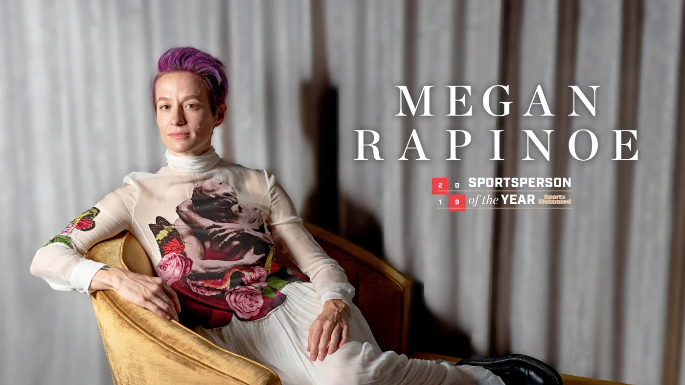
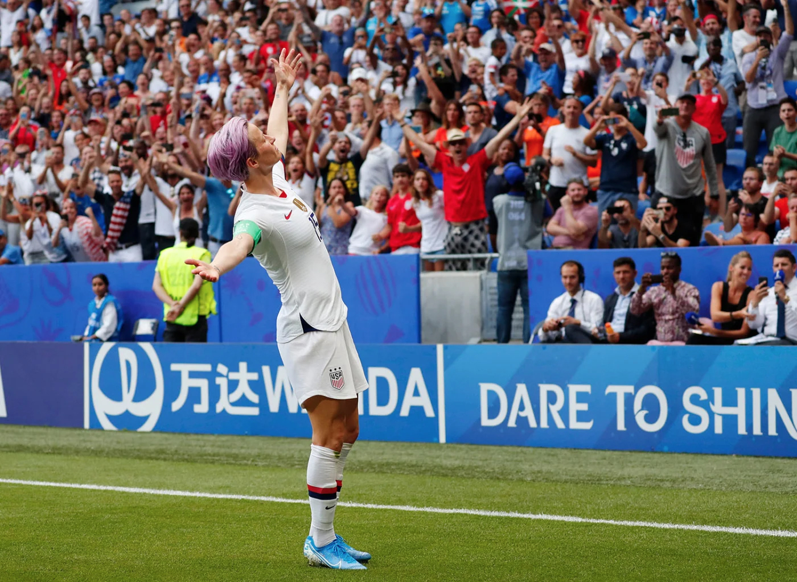
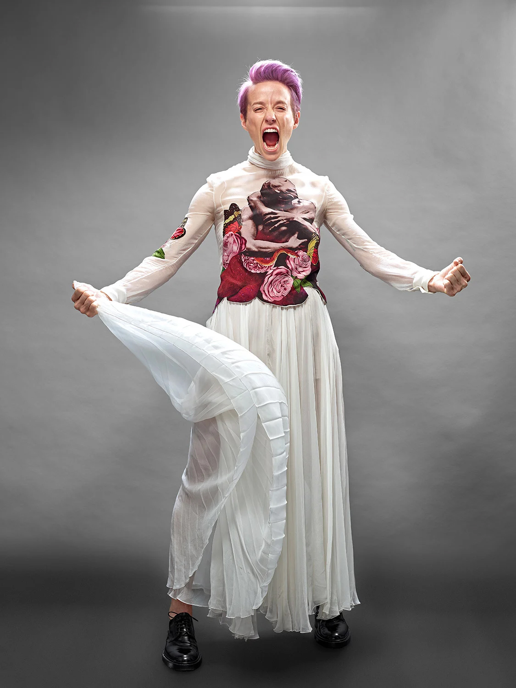

Rapinoe Recognized for Revolting against Gender Biases in Sports
Before the final whistle, before the chants of “Equal pay!” ricocheted around Stade de Lyon, before Megan Rapinoe’s arms were filled with all the trophies a soccer player could possibly earn in one year, first came the tears.
July 7, in the 61st minute of the 2019 World Cup final against the Netherlands, Rapinoe scored to put the U.S. up 1–0. To her, though, this was more than the goal that would win the Americans a record fourth title. It was the equivalent of flashing double-barrel middle fingers. She’d have loved to have done that just once. But, she says, “there are lines.”
The goal itself, on a penalty kick drawn by teammate Alex Morgan, was, like Rapinoe, more about brains than brawn. She reminded herself, Your opponent is more nervous than you are, then she went low and a bit right, breaking her tendency of high and left. Dutch goalkeeper Sari van Veenendaal flinched toward Rapinoe’s usual side, the net rippled, teammates swarmed and the whole scene ended with the pink-haired lesbian winger posing near the corner flag in defiance and triumph and joy: arms outstretched, chin up, head tipped just back. megan-rapinoe-the-pose
Pose, the signature sporting image of 2019, was more than a celebration, just as Rapinoe’s goal was more than a tournament-winner. No one knew this better than Rapinoe’s mom, Denise, and fraternal twin, Rachael, who together had traversed France for a month with the U.S. team and on the day of the final were sitting just down the sideline. They were there because Megan had laid it on thick that this might be her last World Cup (she’ll reassess after the 2020 Olympics) but also because they know she can be as sensitive as she is tough, and even those who appear superhuman need support. Especially if they’ve been publicly questioned by the leader of the free world.
For 34 years, since Megan was born 11 minutes after Rachael—since they learned to play soccer together at age five, since they came out to each other as gay when they were sophomores at the University of Portland—one sister has fortified the other. In France that meant Rachael pulled Megan aside during a family visitation hour in a hotel lobby, sheltering her from all the fuss and all the paranoia from U.S. Soccer officials who feared the muscle stimulator on Rapinoe’s ailing right hamstring might tip off the world that she’d be missing the semifinal against England. It had meant, years earlier, hiding from Megan the hateful emails that came pouring into Rapinoe SC, a clinics-and-online-apparel company that the sisters run together, after Megan joined an NFL quarterback’s lonely protest during the national anthem. All of which had led to this day. Rapinoe was the hero of the World Cup, achieving everything she’d ever dreamed of, but in so many ways it was unlike anything she’d imagined. And so, 16 minutes after her final goal, in her 428th minute of play over five matches, she was substituted out and sat down, just across a divider from the U.S. family seats. As the final seconds ticked off the clock, the sisters locked eyes. And they started bawling.
Sportsperson of the Year
It’s early November and Rapinoe is standing on a frosty field in Greenwich, Conn., popping cough drops to combat a cold she picked up after having spent maybe three days at home in the last month. She and Rachael held a soccer clinic in Farmingville, N.Y., last night; today they have two more sold-out sessions, 175 kids each, before Megan will rush to catch a flight to Columbus for the last national team camp of the year. Denise and the twins’ Aunt Melissa are working the check-in desk, and there’s no security here—which is fine, except when it comes to Megan separating from the crowd for a bathroom break, which proves more challenging than getting one past Van Veenendaal in Lyon.
Away from this chaos, one dad sits in the bleachers, talking on a cellphone while Rapinoe guides girls and boys through a shooting station, and his words remind an eavesdropping interloper of what preceded All of this. “. . . When Megan was kneeling,” the man says, “it was a big deal. . . .”
It’s hard to imagine now, but Rapinoe SC almost went under after Megan joined Colin Kaepernick in protesting police brutality and systemic racism by taking a knee during the national anthem in 2016. A youth club that was hosting a clinic near D.C. that fall felt compelled to request security for its event, fearful of protesters. (No protestors showed.) Enrollment and merchandise sales nosedived. “Maybe those parents are kicking themselves now,” Rapinoe shrugs.
“it just so happens that I came back with a vengeance, better than I had ever been,” Rapinoe says. “And then it was like, Well, you are stuck with me now.”
In Greenwich the sun peeks out and a swarm descends on the star instructor. Rapinoe waves over some high school field hockey players who’ve been hovering nervously, while off to another side a soccer mom coaches up her young daughter to approach for a picture. (“It’s now or never!”) The girls gush thank-yous, and Rapinoe thanks them back.
Megan remembers what it was like sitting with Rachael in the Stanford Stadium stands for the 1999 Women’s World Cup semifinal, watching in awe as the U.S. beat Brazil en route to its second trophy. But, for the most part, female athletes were invisible when Rapinoe was growing up. The posters she had in her room were all of Michael Jordan. The point of these camps is not to teach the kids some magical skill that will land them on the national team. It’s to be visible. Now, gathering her campers at midfield before she leaves for Columbus, Rapinoe opens up the session to questions. Which is how we land on fear.
On one hand, Rapinoe is very much the person captured, post–World Cup, on U.S. goalkeeper Ashlyn Harris’s rollicking Instagram story: standing on a parade float in lower Manhattan, trophy in one hand, bottle of bubbly in the other, announcing, “I deserve this!” But there’s also a part of her that is deeply uncomfortable with all the accolades and attention over her outspokenness. Following the Greenwich camp, in a hotel lobby in Ohio, after one wheel on her suitcase finally gives out from months of travel, she explains, “I never want to be seen as trying to leverage something for personal gain. A lot of the stuff I talk about has a personal benefit. Equal pay. Even kneeling with Kaepernick, there was a lot of personal gain from that.”
For Kaepernick, kneeling during the national anthem meant, seemingly, the end of his career. For Rapinoe, it was a rebirth of hers, eventually. And she wrestles with those outcomes. Not that she ever could have guessed how things would play out.
Kaepernick’s peaceful protest first caught the eye of the nation in August 2016. Rapinoe joined nine days later, before a game with her NWSL club, Seattle Reign. “He needs support,” she remembers thinking, “and I can help.” That September she warned U.S. teammates: She would kneel again before a friendly against Thailand, and she knew it might be uncomfortable for them. “All of us were a little timid about it,” says defender Ali Krieger, who supported Rapinoe but told her she wouldn’t join in. “We didn’t want to lose our jobs, and we weren’t sure how U.S. Soccer was going to react, how the country was going to react. She took all of that criticism.”
When U.S. Soccer released a statement during the Thailand match saying that players and coaches were expected to stand for the anthem “as part of the privilege to represent your country,” and when Rapinoe was benched or kept off the roster for friendlies in October and November, and when again she was left off the roster for the SheBelieves Cup the following spring, yes, she worried that it all spelled the end of her days as a U.S. player. At the time coach Jill Ellis chalked up the moves to roster churn and to the right ACL tear that Rapinoe was still rehabbing. But Rapinoe insists “that’s not the reason I was not on those rosters.” She says the decisions were never fully explained, but the time line married precisely: She didn’t play again for the national team until after the federation passed a rule stating that all players “shall stand respectfully” for the anthem. (Ellis, who stepped down from her U.S. job in July, maintains she made “football decisions” without any direction from the federation. “Was [kneeling] the appropriate thing to do in a national team jersey? I didn’t know,” Ellis says. “But I certainly understood it, and in no way was I saying, You can’t do it.”)
In the end, “it just so happens that I came back with a vengeance, better than I had ever been,” Rapinoe says. “And then it was like, Well, you are stuck with me now.”Read More
USWNT Uses Its Equal Pay Lawsuit as Confetti for World Cup Victory ParadeRapinoe, Lavelle Recover to Lead USWNT to Historic Fourth World Cup Title